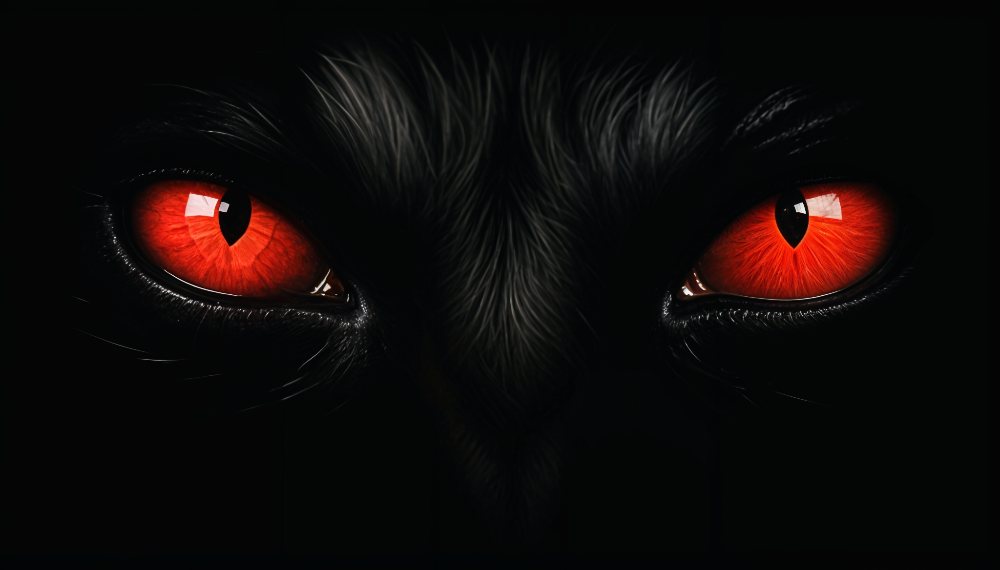
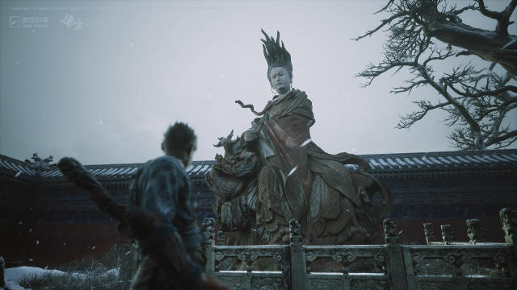
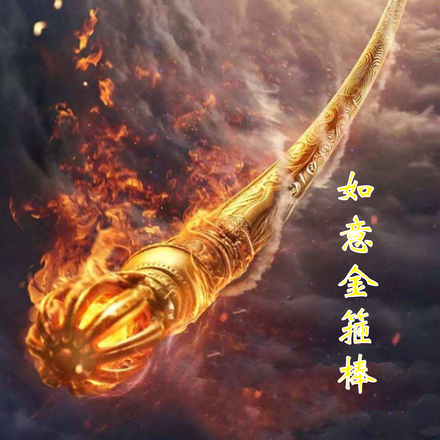
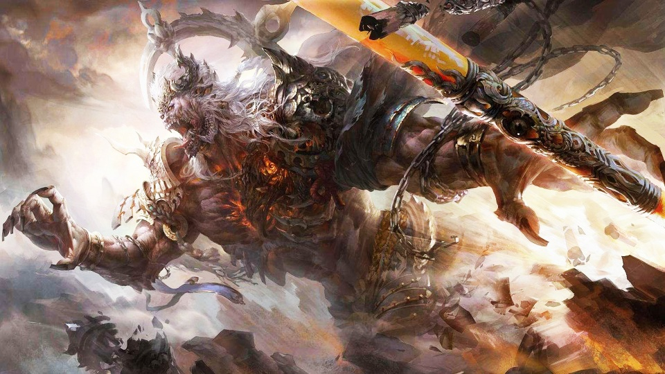
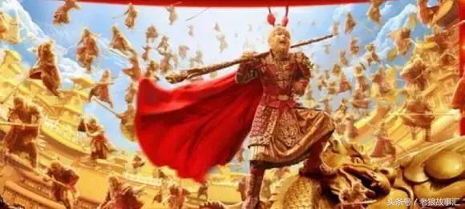
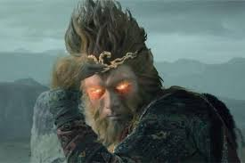

故事介紹
武器介紹
技能介紹
鴻蒙初辟本無性
打破頑冥須
故事介紹

當唐僧師徒一行取經成功後，孫悟空雖然被封斗戰勝佛，卻漸漸銷聲匿跡。 不知過了多少年，玩家扮演的小猴子聽聞這一傳說後心生向往，便下定決心追尋孫悟空西天取經的足跡。 在這段冒險旅程中，他面對了巨龍、妖魔和天兵的考驗，更深入瞭解了自己和世界。 這段歷程不僅是一場冒險，更是一場心靈的洗禮，最終，他成功實現了自我成長與超越，成為了一位更加智慧和勇敢的猴子。
武器介紹

如意金箍棒，又稱「如意棒」或「金箍棒」，是孫悟空的神兵法寶。 這根法寶可以任意變長變短，重量隨心所欲地調整，展現出無盡的力量。 在孫悟空西天取經的艱辛旅程中，如意金箍棒成為了他的得力助手，幫助他克服了重重困難和挑戰。 這根法寶象徵著力量和智慧的結合，是他冒險歷程中不可或缺的一部分。如意金箍棒承載了孫悟空的希望和勇氣，為他帶來了無數的勝利與冒險的榮耀。
技能介紹

法天象地: 法天象地是古代思想家在著作中的一句常見語. 同時，法天象地也是《西遊記》中的神通名稱，施展此神通會讓施法者化身成天地，效仿天地的規模，效仿天，模仿地，跟天一樣高大，地一樣寬廣，是能與天地同高的技能，屬於大神通。甚至調整自然景象，以此來迷惑敵人或保護同伴。這項技能不僅具有強大的攻擊性，還擁有廣泛的應用範圍，可以在各種情況下發揮重要作用。

分身術：分身術是孫悟空的神通之一，能夠分化出多個身影，與敵人進行分散戰鬥或迷惑對手。這種技能使他能在戰場上快速穿梭，出其不意地進行攻擊或逃脫困境。悟空可以將自己分成多個身影，每個身影都具有獨立的意識和行動能力，使得敵人難以辨識真偽。這讓他能夠在戰鬥中佔據優勢，創造出各種意想不到的戰術，是他關鍵的戰鬥技能之一。分身術還可以用於偵查和情報收集

火眼金睛：火眼金睛是孫悟空的特殊能力，通過此法術，他能夠透過火焰和煙霧看到事物的真實形態，甚至窺見幽微的能量變化。這使他能夠識破偽裝、看穿幻象，並在混亂的戰場中保持警惕，掌握先機。悟空的眼睛能夠穿透迷霧和煙霧，看到背後的真相，這使他成為戰場上的智慧領袖和優秀的戰術家。火眼金睛不僅讓悟空能夠在戰鬥中獲得優勢，還使他能夠在冒險旅程中避免危險，保護自己和同伴的安全。